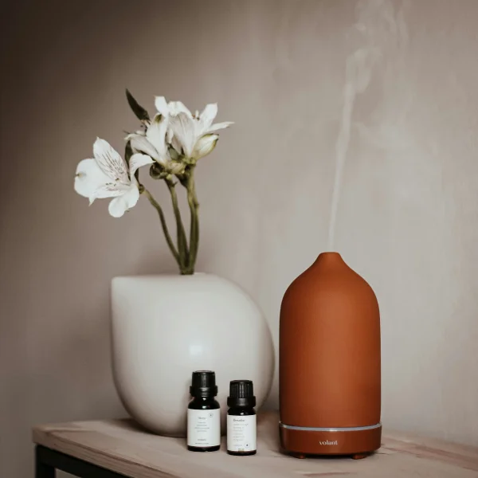

01 / Relaxamento
Massagem
Uma pausa para relaxar e voltar a atenção ao corpo. Converse com o profissional sobre o tipo de massagem disponível e suas necessidades antes da sessão.

Cuidado integral
Conheça as abordagens que fazem parte da Terapia Integrativa. O primeiro passo é conversar sobre suas necessidades e expectativas.
Nossas práticas
As informações abaixo apresentam cada serviço de forma geral. Converse com a equipe para confirmar disponibilidade, indicação e formação do profissional responsável.
Uma pausa para relaxar e voltar a atenção ao corpo. Converse com o profissional sobre o tipo de massagem disponível e suas necessidades antes da sessão.

Práticas guiadas de respiração, atenção e presença que podem ser exploradas no seu próprio ritmo.

Uma prática de movimento consciente com orientação profissional e atenção às possibilidades de cada pessoa.

Um atendimento individual que pode ser apresentado em uma conversa inicial. Tire dúvidas sobre a abordagem e a formação do profissional.

Prática integrativa que deve ser realizada por profissional habilitado. Converse sobre sua situação individual antes de agendar.

Uma experiência sensorial com aromas e óleos essenciais, escolhidos de acordo com as preferências de cada pessoa. Converse com a equipe sobre os produtos utilizados e possíveis sensibilidades antes do atendimento.